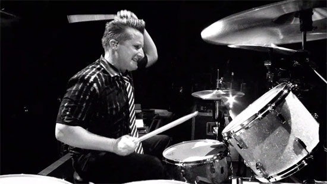

History
Drums—technically known as membranophones—may be mankind’s oldest instrument, dating back to when humans first learned to keep rhythm.
Drums consist of a membrane (also known as a skin) stretched over an open-ended cylinder (also known as a shell) and struck with the band or a stick. Some drums have a skin stretched over the bottom of the shell as well.
Drums first appeared as far back as 6000 BC. Mesopotamian excavations unearthed small cylindrical drums dated 3000 BC. American Indians and the indigenous people of Peru, for example, used gourd and wooden constructed drums for their rituals, religious ceremonies, and various other aspects of their social life.

Before the modern era, the various drum-related percussion instruments were often played by different people. For example, the bass drum would be played by one musician with the cymbals and snare played by others. As music evolved, this became unwieldy and expensive. Various attempts were made to consolidate all these instruments so that they could all be played by just one person.
The modern drum set-up evolved out of marching bands as well as the vaudeville and jazz eras. The foot-operated bass drum appearing in 1909 courtesy of Ludwig & Ludwig Co. of Chicago, which freed up the hands to play other things for the first time. Experiments with various set-ups continued until the 1930s when a dance band drummer named Ben Duncan and a few others settled on a standardized arrangement of one bass drum, a snare, a raised tom-tom and a floor tom-tom.